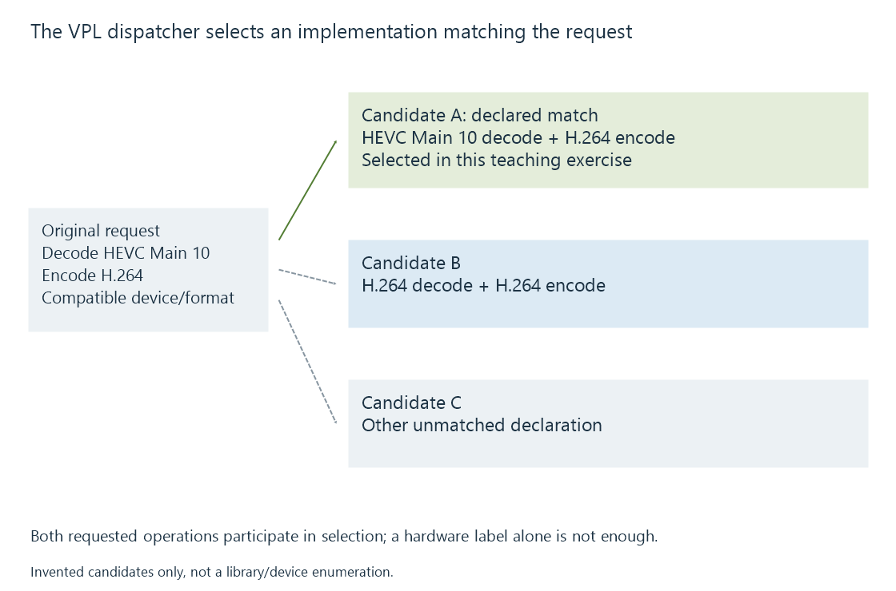

Intel VPL and the oneVPL name
Intel VPL is the media library interface and dispatcher used to select supported Intel video implementations and coordinate decode, encode and processing sessions.
Intel's Video Processing Library, now called Intel VPL, provides interfaces for media decoding, encoding and processing. oneVPL is the earlier name still found in repositories, packages and application build descriptions.
Intel's current overview explicitly describes that naming change and identifies VPL version 2.x as the successor API to the discontinued Media SDK project.
The dispatcher finds a usable implementation
The dispatcher lets an application enumerate and filter available implementations before creating a session with a selected implementation.

Some central names in the public API are:
| API operation | Role |
|---|---|
| MFXLoad | Create the loader |
| MFXCreateConfig | Create a filter configuration |
| MFXSetConfigFilterProperty | Apply an implementation-selection property |
| MFXEnumImplementations | Inspect matching implementations |
| MFXCreateSession | Load and initialize a selected implementation |
| MFXUnload | End the loader's lifecycle |
These are roles, not a complete sequence that can ignore error results or object ownership. Enumerated descriptions have a specified release function, and session/loader lifetimes must follow the API contract.
A matching implementation answers the stated selection
Consider an original candidate-selection exercise:
| Candidate | Hardware implementation | Decoder | Encoder |
|---|---|---|---|
| A | Yes | Declared HEVC Main 10 | Declared H.264 |
| B | Yes | Declared H.264 | Declared H.264 |
| C | Hypothetical unmatched implementation | Other configuration | Other configuration |
If the application needs the declared HEVC input and H.264 output, A fits these stated codec requirements. B's hardware label does not add the missing HEVC declaration.
The table is invented selection data. It is not a VPL capability dump, product list or promise that a particular implementation is installed.
Additional conditions can include adapter, dimensions, surface formats and video-processing support. A filtered result becomes useful only when the requested operation can be initialized with its actual configuration.
A session coordinates media work and resources
A created session supplies a media implementation context. Decode, encode and VPP use their own configuration and data-flow contracts inside the supported interface.
Video work can be asynchronous. The application must arrange usable surfaces, retrieve outputs and use completion/synchronization appropriately. Loading the dispatcher library establishes an earlier software stage than completing a media operation.
This distinction matters in an Emby-related log or build description. A reference to libvpl or oneVPL explains a software dependency; the selected decoder, encoder and actual media properties identify the executing job.
Legacy compatibility is a software-stack question
Older Media SDK interfaces, runtimes and applications are not made identical to a VPL version-two application by changing a filename. The transition involves the application's interface use and the installed implementation/driver path.
Intel's legacy project is no longer maintained. The Media SDK article explains why its names remain useful for interpreting older stacks without treating them as another media-engine generation.
See Also
- Intel Quick Sync Video (QSV)
- Intel Media SDK (legacy)
- Intel video processing (VPP)
- How media APIs connect applications to hardware
- Video Acceleration API (VA-API)